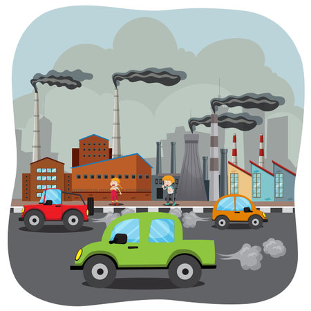
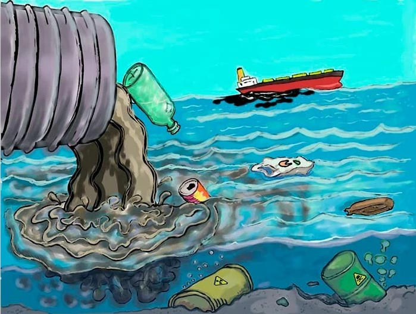
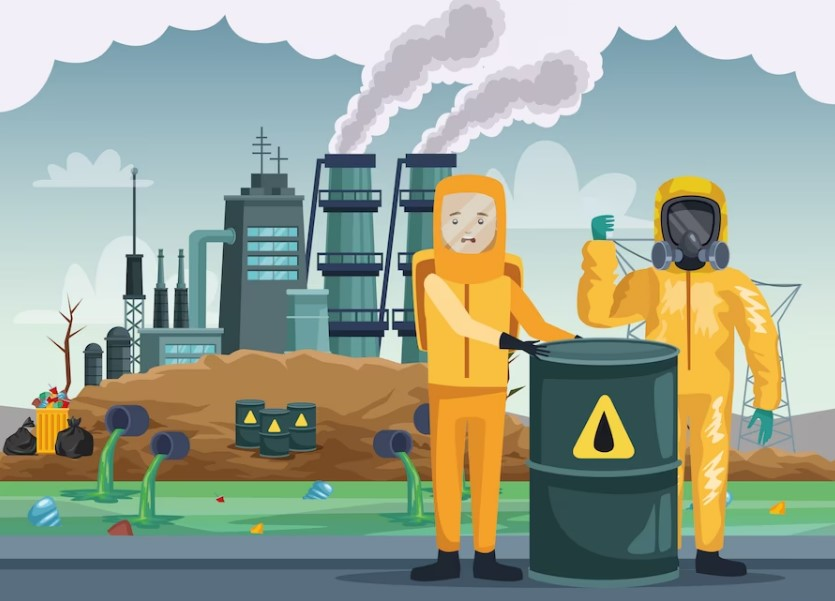
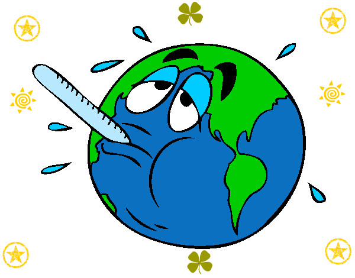
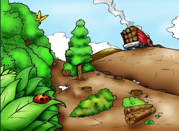
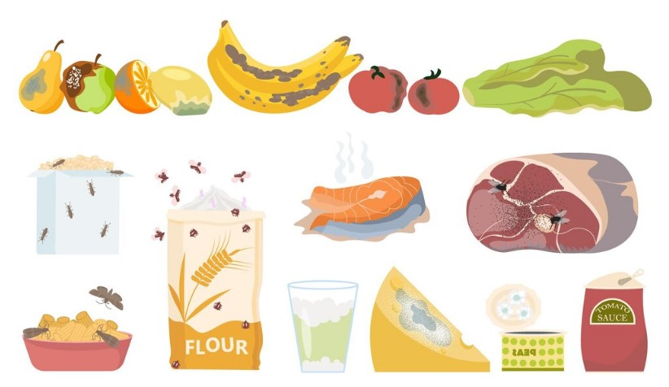
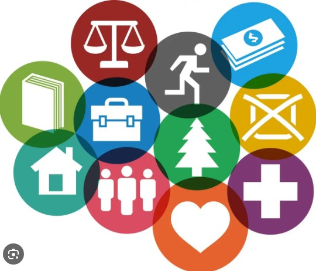
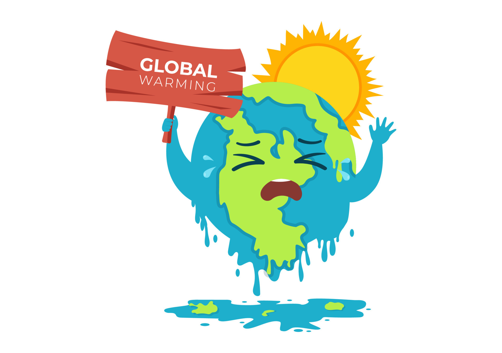
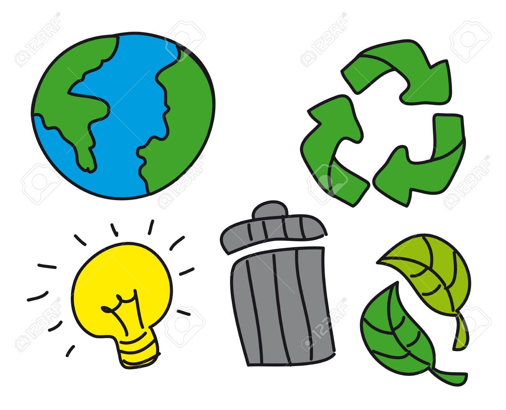
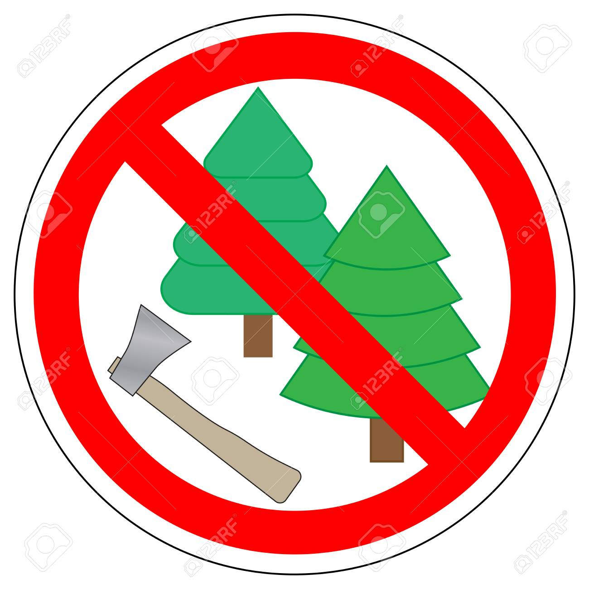

¿Qué es la contaminación ambiental?
La contaminación ambiental se refiere a la presencia de sustancias o elementos dañinos en el entorno natural que afectan negativamente a los seres vivos y al medio ambiente en general. Puede ser causada por diversas actividades humanas, como la emisión de gases contaminantes, el vertido de residuos tóxicos, la deforestación y muchas otras. La contaminación ambiental puede tener graves consecuencias para la salud humana, la biodiversidad y el equilibrio de los ecosistemas.
Tipos de contaminación ambiental
La contaminación ambiental es un problema que afecta a nuestro entorno y puede tener consecuencias negativas para la salud humana y el equilibrio de los ecosistemas. A continuación, te presento algunos de los tipos de contaminación ambiental más comunes:
Contaminación del aire:
Se produce por la emisión de sustancias tóxicas y contaminantes en el aire, como los gases de escape de los vehículos, las emisiones industriales y el humo de los cigarrillos. Esta contaminación puede causar problemas respiratorios y contribuir al cambio climático.
Contaminación del agua:
Ocurre cuando se vierten sustancias químicas, desechos industriales o residuos agrícolas en cuerpos de agua como ríos, lagos y océanos. Esto puede afectar la calidad del agua y poner en peligro la vida acuática y la salud humana.
Contaminación química:
Se produce por la liberación de sustancias químicas tóxicas al medio ambiente, como productos químicos industriales, pesticidas y productos de limpieza. Estos contaminantes pueden tener efectos perjudiciales para la salud humana y el equilibrio de los ecosistemas.
Consecuencias de la contaminación ambiental
La contaminación ambiental tiene diversas consecuencias que afectan tanto al medio ambiente como a la salud de las personas.
Impacto en la salud:
La exposición a contaminantes ambientales puede tener efectos negativos en la salud humana. La contaminación del aire, por ejemplo, puede causar problemas respiratorios, como asma y enfermedades pulmonares. Asimismo, la contaminación del agua puede provocar enfermedades transmitidas por el agua, como la diarrea y la hepatitis.
Deterioro de ecosistemas:
La contaminación ambiental puede afectar negativamente los ecosistemas naturales. La contaminación del suelo y del agua puede dañar la flora y la fauna, causando la pérdida de biodiversidad y la degradación de los ecosistemas acuáticos y terrestres.
Contaminación de alimentos:
La contaminación ambiental puede afectar la calidad de los alimentos que consumimos. Los contaminantes presentes en el suelo y el agua pueden ser absorbidos por las plantas y los animales, lo que puede llevar a la contaminación de los alimentos y representar un riesgo para la salud humana.
Impacto ecónomico:
La contaminación ambiental también tiene un impacto económico significativo. Los costos asociados con la limpieza y la restauración de áreas contaminadas, así como los gastos en atención médica debido a enfermedades relacionadas con la contaminación, pueden ser muy altos.
Impacto en calidad de vida:
La contaminación puede afectar negativamente el bienestar de las personas, causando estrés, problemas de salud y disminución de la calidad del entorno en el que vivimos. Además, puede tener repercusiones económicas, ya que los costos asociados con la atención médica y la restauración de áreas contaminadas pueden ser significativos.
Cambio climático
La contaminación ambiental contribuye al calentamiento global y al cambio climático. Las emisiones de gases de efecto invernadero, como el dióxido de carbono, atrapan el calor en la atmósfera, lo que provoca un aumento de la temperatura global. Esto tiene consecuencias como el derretimiento de los glaciares, el aumento del nivel del mar y eventos climáticos extremos.
¿Cómo evitar la contaminación ambiental?
No existe una respuesta sencilla a esta pregunta, ya que la solución es necesariamente una combinación de medidas públicas y privadas, colectivas e individuales, y probablemente ello implique un cambio drástico en nuestro modo de vivir y en nuestros valores filosóficos. Para reducir el impacto que nuestra existencia tiene sobre un planeta vasto y hermoso como el nuestro, deberíamos:
Tomar medidas individuales.
Para ello existe el programa de las tres R: Reusar, Reducir y Reciclar, por ejemplo. Esto implica reusar lo que aún tenga vida en lugar de comprar uno nuevo; reducir el consumo de recursos a lo estrictamente necesario, o sea, no derrochar ni agua, ni electricidad, ni producir más basura de la debida; y por último reciclar aquellos materiales que puedan reincorporarse a la industria.
Tomar medidas colectivas.
No es cierto, desde luego, que vayamos a compensar por todo el daño ecológico de las industrias y plantas eléctricas simplemente reduciendo y clasificando nuestra basura, de modo que también debemos presionar como ciudadanos para que nuestros gobiernos tomen medidas con perspectiva ecológica, tales como educar a las masas al respecto, multar a los grandes contaminantes, disponer las medidas necesarias para el reciclaje a gran escala, y en general, pensar la sociedad con una necesaria perspectiva sustentable.
